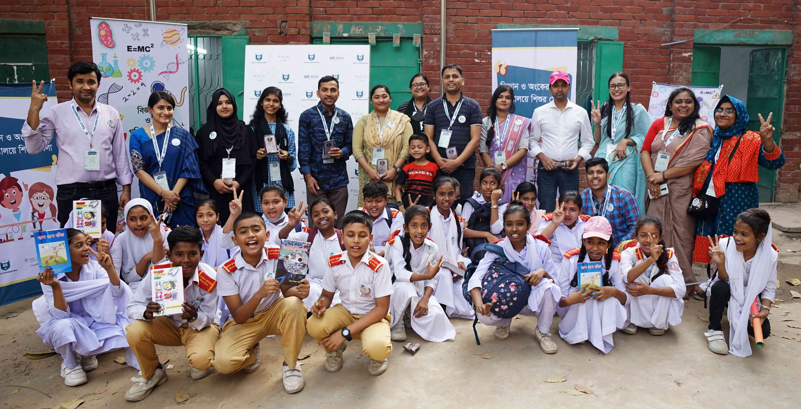

Work with the SAIST Foundation directly connects research outputs to health interventions in Bangladesh, particularly for maternal–child health and environmental exposures in low-resource settings. Community consultations, capacity-building workshops, and co-design sessions with local health workers are central to this effort.

